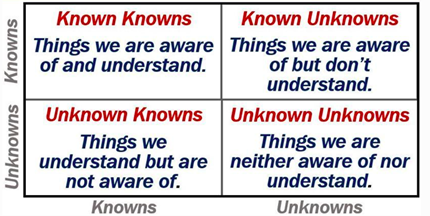
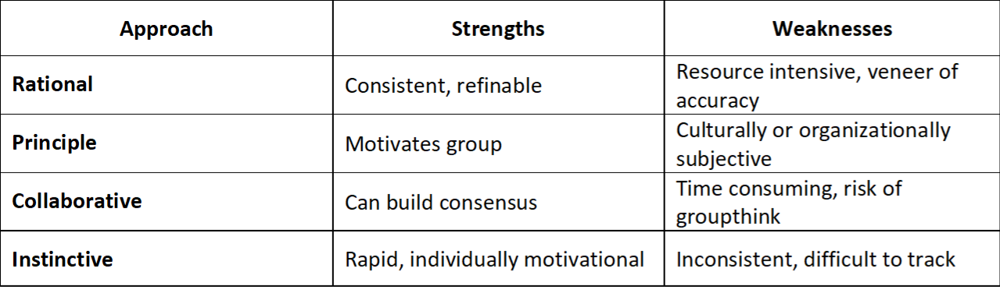
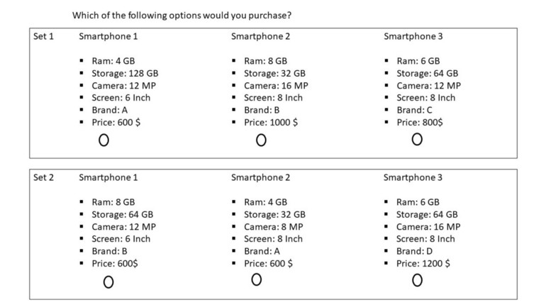
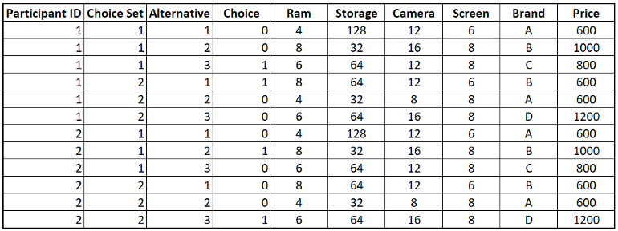
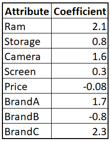
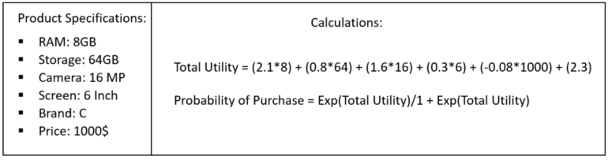
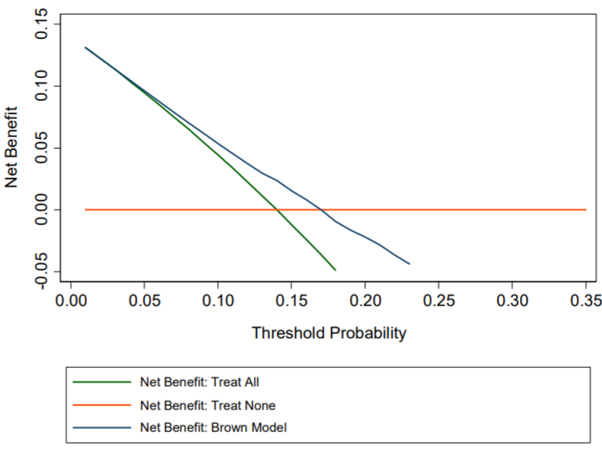
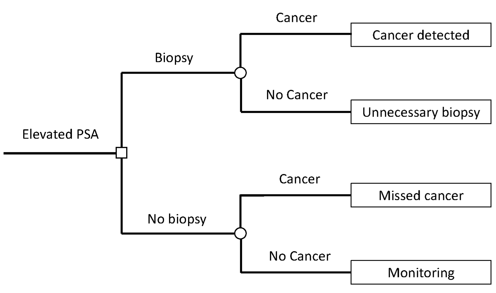
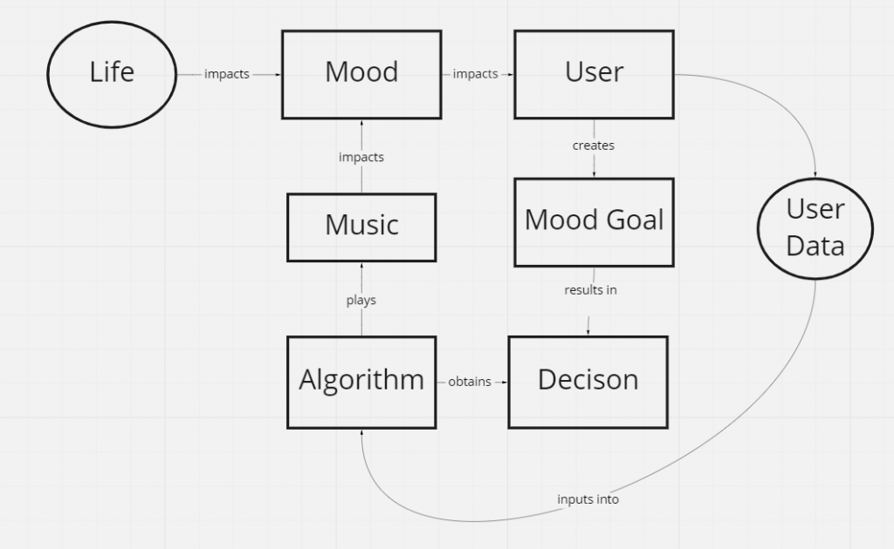

Decision Intelligence
Misc
- Also see
- Notes from
- Decision Theory video playlist
- Packages
- {twig} - Provides tools for building decision and cost-effectiveness analysis models. It enables users to write these models concisely, simulate outcomes—including probabilistic analyses—efficiently using optimized vectorized processes and parallel computing, and produce results
Terms
- Alternative - The levels of a polytomous response in Random Utility Models.
- Choice Probability - The probability that a decision-maker will chose a particular alternative. The predicted response for a Random Utility Model.
- Certainty Equivalent - Amount someone would pay to enter a lottery
- Lottery - decision-making situation usually involving a probability for each outcome
- Market Share - The percentage of total sales in an industry or product category that belong to a particular company during a discrete period of time. For a Random Utility Model, when the data is at the market level instead of the individual level, the predicted response is the Market Share.
- Risk/ Insurance Premium - The difference between the Certainty Equivalent and Expected Reward
- It’s how insurance companies make their money.
- Stochastic Dominance - A framework for comparing probability distributions without making specific assumptions about their shape.. It is often used in decision-making under uncertainty, economics, and finance. There are multiple orders of stochastic dominance, each based on different assumptions about the preferences or utility functions of decision-makers. The dominating distribution in all 4 orders is superior in terms of local mean (more of whatever), variance (less risk), skewness (more extreme positive outcomes), and kurtosis (fewer extreme negative outcomes)
- {generalCorr::stochdom2} - Calculates stochastic dominance for 4 orders
- First Order
\[ \begin{align} &F_A(x) \leq F_B(x), \quad \forall x, \\ &\text{with strict inequality for at least one} \; x \end{align} \]- Focuses on simple probability comparisons
- Occurs when the CDF of one distribution is entirely below the CDF of another
- Implies a consistent difference in the probability of values between distributions
- Suggests one group systematically has lower values than another
- Assumes the utility functions are non-decreasing. (i.e. \(u'(x) \ge 0\) where \(u'\) is the first derivative of the utility function)
- Interpretation: If \(F(A) \ge F(B)\), then a risk-averse decision-maker who always prefers “more” of a good would prefer \(A\) to \(B\).
- Also see Post-Hoc Analysis, General >> EDA >> Charts
- Second Order
\[ \begin{align} &\int_{-\infty}^x F_A(t) \, dt \leq \int_{-\infty}^x F_B(t) \, dt, \quad \forall x, \\ &\text{with strict inequality for at least one} \; x \end{align} \]- Considers both probability and overall risk
- A distribution \(A\) second-order stochastically dominates \(B\) if the area under \(A\)’s cumulative distribution curve is always less than or equal to the area under \(B\)’s curve.
- Assumes the utility functions are non-decreasing and concave (i.e. \(u'(x) \ge 0\) and \(u''(x) \le 0\) )
- Interpretation: Decision-makers who are risk-averse (but not necessarily always prefer “more”) would prefer \(A\) to \(B\).
- Third Order
\[ \begin{align} &\int_{-\infty}^x \int_{-\infty}^t [F_A(s) - F_B(s)] \, ds \, dt \leq 0, \quad \forall x, \\ &\text{with strict inequality for at least one} \; x \end{align} \]- Accounts for preferences related to skewness or “peakedness” of distributions.
- Positive skewness reflects situations where decision-makers are willing to accept higher risks for the possibility of large, favorable outcomes, even if the overall expected value or risk profile is similar to alternatives.
- \(A\) dominates \(B\) if the integral of the difference in SSD (the area under the CDF difference) is less than or equal to zero for all \(x\)
- Assumes the utility functions are non-decreasing, concave, and with a preference for skewness (i.e. \(u'(x) \ge 0\) and \(u''(x) \le 0\) and \(u'''(x) \ge 0\))
- Interpretation: Risk-averse decision-makers with a preference for positive skewness may prefer \(A\) to \(B\)
- Examples
- An investor might prefer the startup (positive skewness) because they are drawn to the high-potential upside, despite the low likelihood of success rather than investing in a well-established company offering steady returns with minimal risk
- A farmer expecting a rare, catastrophic drought or flood may prefer a policy that aligns with positive skewness, a policy which only activates in rare, devastating events but offers massive payouts instead of one that covers frequent, moderate losses
- Fourth Order
\[ \begin{align} &\int_{-\infty}^x \int_{-\infty}^t \int_{-\infty}^u [F_A(s) - F_B(s)] \, ds \, du \, dt \leq 0, \quad \forall x, \\ &\text{with strict inequality for at least one} \; x \end{align} \]- Accounts for kurtosis (i.e. tail behavior of distributions)
- Rarely used because the nested integrals can be difficult to estimate for real world data, and most practical decisions in economics, finance, and other fields can be adequately captured by the first 3 orders (i.e. not many people are concerned about rare occurences).
- The decision maker has an aversion to fat tails
- It assumes decision-makers have utility functions \(u(x)\) that are:
- Non-decreasing (\(u′(x)\ge 0\)),
- Concave (\(u''(x) \le 0\)),
- Display a preference for positive skewness (\(u'''(x) \ge 0\)),
- Have increasing risk aversion (\(u^{(4)}(x) \le 0\)).
- Example: Pension Fund Manager
- Context: A pension fund manager evaluates two investment portfolios:
- Portfolio A: Offers a moderate return with low risk and a higher chance of very stable returns (low kurtosis, narrow tails).
- i.e. Returns are normally distributed with low variance (\(\mu = 5\%, \sigma = 2\%\)).
- Portfolio B: Offers a similar average return but has a small probability of very extreme negative or positive outcomes (high kurtosis, fat tails).
- i.e. Returns follow a Student’s \(t\)-distribution with the same mean and variance, but with 3 degrees of freedom, resulting in fatter tails.
- Portfolio A: Offers a moderate return with low risk and a higher chance of very stable returns (low kurtosis, narrow tails).
- Utility Function Assumptions:
- Non-decreasing: The manager prefers higher returns (\(u'(x) \geq 0\)).
- Concave: The manager is risk-averse (\(u''(x) \leq 0\)).
- Preference for positive skewness: Extreme positive outcomes are more favorable (\(u'''(x) \geq 0\)).
- Aversion to fat tails: The manager dislikes distributions that expose the fund to extreme, volatile outcomes (\(u^{(4)}(x) \le 0\)).
- Decision Preference: The manager prefers Portfolio A over Portfolio B because it minimizes the chances of extreme negative outcomes, even if both portfolios have similar expected returns and variances. This choice reflects fourth-order stochastic dominance.
- Context: A pension fund manager evaluates two investment portfolios:
- Accounts for kurtosis (i.e. tail behavior of distributions)
- Utility - total usefulness or enjoyment or satisfaction received from a decision or action
- Utility Theory - The idea that people behave in line with self-interset where self-interest reflects peoples’ needs to save time and economize on effort.
- Value of Perfect Information (VPI) - The difference between 2 different influence diagrams.
- If one diagram has an additional variable or the same variables but different probabilities of states, then the difference can tell us the value of that extra information (i.e. new variable) or you can compare different scenarios based on the different probabilities for particular states.
Mathematical Notation
- \(D( )\) : Decision-making situation (e.g. Deciding whether to purchase insurance or not)
- \(\text{Val}(A)\) : Set of all possible actions (e.g. performing a biopsy, taking a drug)
- \(\text{Val}(X)\) : Set of all possible states or outcomes (e.g. discovery of cancer, death)
- \(P(X|A)\) : Probability of a state given an action has taken place
- \(U(X,A)\) : Utility function; assigns a numerical utility for each state and action combination
- \(EU[D(a)]\) : Expected utility of a decision-making situation (aka lottery) for a particular action, \(a\)
\[ \text{EU}[\mathcal{D}[a]] = \sum_x P(x |a)\;U(x, a) \]- The goal is to choose an action that maximizes this value (aka Maximized Expected Utility (MEU))
Framework
{kind=link}
- Misc
- Notes from A Framework for Embedding Decision Intelligence into your Organization
- Article seems to draw heavily from Lorien Pratt’s book, “Link”
- Pratt’s Website has a lot of free resources
- Article seems to draw heavily from Lorien Pratt’s book, “Link”
- Basics of Causal Design Diagrams (CDD) Link
- The example used is a product manager responsible for the first production run of a new product
- Notes from A Framework for Embedding Decision Intelligence into your Organization
- Enabling Factors
- Any DI framework is unlikely to succeed without a corporate environment that enables the application of decision intelligence techniques to a corporate context
- An organization’s decision culture (values, desire for transparency in decision-making, culture of continuous improvement, etc.) is a critical enabling factor that supports a DI approach to decision-making
- Organizational processes such as governance, risk management, and program/project management provide a vehicle for building decision-supportive practices into corporate processes
- An organization’s technological capabilities and infrastructure are critical to ensuring that data assets can be stored, transformed, visualized, analyzed, etc. Similarly, these capabilities enable storage/retrieval of decision assets, and provide collaboration capabilities and tooling that are critical to holding facilitated discussions that are critical to decision intelligence
- Pre-Decision Activities
- Decision Framing
- Sets the boundaries of the decision — what are my actions (levers), outcomes (desired or otherwise), and contingencies (risks and externalities)?
- Questions to address before looking at the data
- Decision Mapping Create the CDD by graphically represent causal relationships between actions, intermediaries, and desired outcomes See link above for the basics of CDDs
- It presents causal links that serve as points of integration for data and analytic products, metrics, information, predictive models, etc. and in this way orchestrate multiple inputs into a single decision
- It presents an opportunity to revisit the entire decision process for post-decision review and provides for the re-use of decision artifacts
- Data and Analytics Integration
- Identify where and how data or analytics can support downstream pre-decision processes (e.g. modeling), or how to determine whether an action will have a desired outcome
- Attach specific data, metrics, analytics, predictive models, etc. to sub-components of a decision.
- Consider blocks of sub-components (for example, clusters of action-link-outcome or similar) that are known to have relationships that are governed by single aggregate relationship that describes actions and outcomes
- Use CDD as a scaffold for integrating data and analytics.
- Identifying Uncertainty
- By proactively identifying areas of uncertainty, we are preparing ourselves to acknowledge the limitations of our decision process and giving ourselves a chance to identify systematically unresolvable uncertainty, or areas where we might reduce the level of uncertainty in our decision-making.
- Sources of uncertainty can be external to your organization, internal, or driven by inherent issues with data-quality
- In the CDD, look at each causal link
- Identify uncertainty from a Rumsfeldian perspective
 - Where data and analytics have been integrated
- From a statistical perspective — what’s the error? what does the quality of the data look like?
- Identify uncertainty from a Rumsfeldian perspective
- Approaches for making decisions under uncertainty
- Modeling
- Quantitatively model aggregated action-to-outcome links within the CDD
- Potentially can assess the aggregate impact of action(s) on decision outcomes or intermediates
- Approach

- Decision Framing
- Post-Decision Activities
- Decision Retrospective
- Even the “best” decisions can be wrong and the most effective decisions eventually become obsolete.
- Don’t evaluate the decision totally on the outcome (i.e. outcome bias) but also on the decision-making process
- Retention of Decision Artifacts
- A well documented decision provides a rich opportunity to retain and re-use all these decision artifacts for future decisions
- Main Components
- Clear frame, a clear design, potentially a decision map and link to data and analytics, lessons learned
- Sub Components
- Any information that has been hypothesized and tested through an action — causation — outcome link
- Decision Retrospective
{kind=link}
{kind=link}
Maximizing Expected Utility
Influence Diagram
- Shapes
- Ovals: Random Variables
- Rectangles: Actions
- Diamond: Utility
- Shapes
Example (found a start-up or get a job)
- Market and Found both influence utility
- Market gives the probability of there being a bad, moderate, or good market for the start-up, \(m^0\), \(m^1\), or \(m^2\) respectively
- Found is binary action; Found (\(f^1\)) or Don’t Found (\(f^0\)) a start-up (i.e. get a job)
- \(U\) is the utility
- See Utility Functions for details on how this is calculated
- Expected utility calculation for a bad market and founding a start-up:
\[ U = m^0 \cdot U(m^0, f^1) = 0.5 \cdot -7 = -3.5 \] - Expected Utility for \(f^1\)
\[ \text{EU}(f^1) = (0.5 \cdot -7) + (0.3 \cdot 5) + (0.2 \cdot 20) = 2 \]- Which is higher than \(\text{EU}(f^0) = 0\), so the person should found the start-up
{kind=link}
Maximizing Expected Utility Using Decision Rules
Information is used create a Decision Rule to inform the agent on which Action maximizes Utility
Expected Utility with prior information
\[ \text{EU}[\mathcal{D}[\delta_A]] = \sum P_{\delta_A}(x,a) \cdot U(x, a) \]To calculate the Expected Utility this equation gets manipulated into
\[ = \sum_{Z,A} \delta_A(A|Z) \sum_W \left(\left(\prod_i P(X_i | Pa_{x_i})\right)U(Pa_U)\right) \]
** See the Example for a clearer understanding of how to utilize all of this **
Basically there are two parts:
The decision rule distribution (left summation, over \(Z\) and \(A\))
The parent variable to the action (right summation, over \(W\))
\(Z\) is the parent variable to the action and \(W\) is the rest of the variables that aren’t \(Z\)
\[ \begin{align} Z &= Pa_A \\ W &= \{X_1, \ldots, X_n\} - Z \end{align} \]
Step function the Decision Rule
\[ \delta_{A}^*(a|z) = \left\{ \begin{array}{lcl} 1 & a=\mbox{argmax}_A\;\{\mu(A,z)\} \\ 0 & \text{otherwise} \end{array}\right. \]- Says for an action value, \(a\), given a parent variable value, \(z\), perform that action (1) if it has the max utility and otherwise don’t perform that action (0)
Example (Decision Rule based on prior information)
.png)
See Maximizing Expected Utility >> Example for details on all variables (except Survey)
Survey is added and used to create a decision rule, \(\delta\), which will maximize the utility and determine the action (found/not found) either probabilistically (more than 1 agent making a decision) or deterministically (1 agent)
- It surveys people to determine what the probability of bad, moderate, or good market will be
- Example: Reading the Survey conditional probability distribution matrix:
- If the true probability that market will be bad is \(m^0 = 0.5\), then the probability that survey will say that it will be a bad market, \(s^0\), is 0.6.
The decision rule, \(\delta(F,S)\), is a conditional probability distribution shown as the matrix on the bottom with values of \(S\) as rows and values of \(F\) as columns
- The decision rule is:
- if \(s^0 \rightarrow f^0\) (since \(0 \gt -1.25\))
- if \(s^1 \rightarrow f^1\) (since \(1.15 \gt 0\))
- if \(s^2 \rightarrow f^1\) (since \(2.1 \gt 0\))
- The decision rule is:
The Maximized Expected Utility (MEU) is
\[ \begin{align} \text{MEU} &= \mbox{max\_utility}(s^0) + \mbox{max\_utility}(s^1) + \mbox{max\_utility}(s^2) \\ &= 0 + 1.15 + 2.10 = 3.25 \end{align} \]
- Note how adding Survey increased the Maximized Expected Utility from 2 (from Maximizing Expected Utility >> Example) to 3.25
- Value of Perfect Information, \(\text{VPI} = 3.25 - 2.00 = 1.25\)
- Therefore, the agent should be willing to spend less that 1.25 utility points to conduct the survey
The Expected Utility w/prior information equation gets values substituted into it and is factored a bit.
- \(P_{δ_A}(x, a)\) becomes \(P(M) \cdot P(S|M) \cdot δ_F(F|S)\) which is Market \(\times\) Survey \(\times\) Found
- \(U(x, a)\) becomes \(U(F, M)\) which is Utility
- The decision rule distribution is factored out of the group leaving a group that is summed over the parent variable to the action which is Found
Computing the values to the Decision Rule matrix
- Steps
- Choose a value for each decision rule distribution variable (e.g. \(S\), \(F\))
- For each value of \(M\), calculate \(P(M) \cdot P(S|M) \cdot U(F, M)\) then sum all the products
- Repeat for each combination of the decision rule distribution variables
- Example
- Let \(S = s^0\) and \(F = f^1\)
- For \(m^0: 0.5 \cdot 0.6 \cdot -7 = -2.1\)
- For \(m^1: 0.3 \cdot 0.3 \cdot 5 = 0.45\)
- For \(m^2: 0.2 \cdot 0.1 \cdot 20 = 0.40\)
- Therefore, \(-2.1 + 0.45 + 0.4 = -1.25\)
- Steps
Utility Functions
- Misc
- All attibutes/tradeoffs (e.g. money, time, pleasure) that affect the agent’s preferences must be included into the utility function
- For complicated systems, the Utility is decomposed into separate sub-utility functions with various numbers of variables and actions influencing each. The Total Expected Utility for an action is the sum of the separate expected utilities for that action.
- Example: The action of studying at school
- Different utilities arise from studying (e.g. getting good grades feels good, good job because grades are good feels good, college life may suffer because of increased studying) with different variables influencing each. To get the total expected utility from studying or not studying, you’d need to sum the individual utilities.
- Example: Prenatal diagnosis
- Attributes
- Testing - How painful is the testing procedure
- Knowledge - Knowing whether your baby has down syndrome
- Down Syndrome - Probability the baby has down syndrome
- Loss of Fetus - Testing procedure comes with a risk of losing the fetus
- Future Pregnancy - Any issues found may affect future pregnancies
- Total Utility
\[ U_{\text{tot}} = U(T) + U(K) + U(DS, LoF) + U(LoF, FP) \]
- Attributes
- Example: The action of studying at school
- Utility Curve Types
- Risk Averse - Concave (most common)
- Risk Neutral - Straight Line
- Risk Seeking - Convex
- Expected Reward < Certainty Equivalent which means the Risk Premium is negative
- People willing to pay more for low probability of winning a large reward
- e.g. Gambling at a casino
- Expected Reward < Certainty Equivalent which means the Risk Premium is negative
- Micromort - A 1 in 1M chance of death is worth $20 (1980 dollars)
- Useful for including death into a utility function and ranking utilities for various attributes
- QALY (Quality adjusted Life Year) - Attribute that’s common in medical field
- Example (Risk Averse Curve)
.1.png)
- \(D\): Decision-Making Scenario (aka lottery)
- \(p = 0.50\)
- Expected Utility line for the lottery is a linear combination of \(p\) and Expected Reward (represented by the dotted line)
- Low \(p\) implies Expected Utility is closer to zero
- High \(p\) implies Expected Utility is closer to the point on the curve above the reward value (e.g. $1000)
- Expected Reward (ER) for the lottery:
\[ \begin{align} \text{ER} &= p \cdot \text{reward}_1 + p \cdot \text{reward}_2 + \cdots \\ & = 0.50 \cdot \$1000 + 0.50 \cdot\$0\\ &= \$500 \end{align} \] - The Certainty Equivalent is $400
- It’s the Reward value according to the point on the Utility curve that’s horizonally across from the point that’s above the Expected Reward on the Expected Utility line .
- Risk Premium (RP) = Expected Reward of lottery - Certainty Equivalent = $100
Conjoint Analysis
- Also see Experiments, Design >> Conjoint Analysis
- Notes from
- Misc
- Used to understand the relative importance/preference of attributes and quantify the utility a consumer gains from each attribute of a product
- Models the trade-offs a consumer might make while making a purchase decision
- Used to understand the relative importance/preference of attributes and quantify the utility a consumer gains from each attribute of a product
- Assumptions
- Consumers purchase the product which gives them the highest total utility (sum of individual attribute utilities)
- Consumers follow a compensatory decision-making process. Simply speaking, this means that a positive attribute of a product can compensate for a negative attribute, i.e., customers are willing to make trade-offs.
- Steps
Conduct a market research study
Brainstorm on attributes that the consumer might use to make a decision on purchases your product
- e.g. Smartphone: Ram, Storage, Camera, Screen, Brand, and Price
Stratify sample and survey on these attributes
- For each Set (“Choice Set”), a partipant selects one group of attributes
- Actual questionaire will have 10 to 20 choice sets based on the number of attributes of the product
Record answers
- Choice = 1 if that Alternative is selected by the participant
- Alternative being the particular group of attributes in that Choice Set
- I’d add whichever participant characteristics were used in the stratified sampling for mixed modeling (see next step)
- Choice = 1 if that Alternative is selected by the participant
Fit a logistic regression
model <- glm(Choice ~ 0 + Ram + Storage + Camera + Screen + Brand + Price, Data = Data, Family = Binomial)- Intercept is forced to 0 so when all the dependent variables are 0, there should technically be 0 utility for the product
- Seems like since we stratify sampled, we should use a mixed model approach to get more out of the data (group by Participant ID)
Summarize utilities for each attribute
- The log-odds that we model using Logistic Regression represent the utility the consumer gains from an attribute
- e.g. A $1 increase in Price results in a 0.08 unit decrease in utility on average for our customers
- The log-odds that we model using Logistic Regression represent the utility the consumer gains from an attribute
Calculate the total utility and probability of purchase
- Potential attribute value combinations can be fed to the model and probability of purchase can be predicted
- I don’t think this is correct for Total Utility. Utilities have to be on the same scale and therefore all the variables would have to be on the same scale, i.e. all continuous + standardized or all discrete, in order for this sum to be correct.
- Maybe standardized continuous and discrete variables would work
{kind=link}
{kind=link}
{kind=link}
{kind=link}
Decision Curves
Decision Curve Analysis (DCA)
Compares prediction models by looking at net benefit across a range of threshold probabilities
tl;dr
- Designed for medical research
- The parts about risk tolerance also reminds me of financial risk, so perhaps this can be used in or modified to use in risk analysis in other fields as well.
- DCA Net Benefit focuses on TP and FP which won’t necessarily be an optimal metric for general use outside the medical field.
- DCA Net Benefit has an advantage over Traditional Decision Analysis (DA) Net Benefit (see last section) in that utilities for various scenarios doen’t have to be estimated.
- This is used for model comparison and not (necessarily) choosing a probability threshold
- The threshold is chosen according to the risk tolerance of the patient (or doctor).
- Example: how large a probability of cancer is acceptable until acceding to having a painful biopsy in order to confirm the presence of the cancer.
- The threshold is chosen according to the risk tolerance of the patient (or doctor).
- Choice of model (by highest net benefit) may depend on the threshold you choose.
- One model may be best only for a certain range of probability thresholds.
- Designed for medical research
Misc
- Notes from
- Tutorial
- I only read the section for binary treatment variables but survival models were also covered
- Decision curve analysis for quantifying the additional benefit of a new marker (code button at very top of page)
- Tutorial
- Packages
- {bayesDCA} (Paper) - Bayesian Decision Curve Analysis for clinical prediction models and diagnostic tests.
- {BCEA} - Produces an economic evaluation of a sample of suitable variables of cost and effectiveness / utility for two or more interventions, e.g. from a Bayesian model in the form of MCMC simulations
- Cost-effectiveness analysis plots, such as CE planes and CEAC
- Summary statistics and tables
- EVPPI calculations and plots
- Resources
- Cost-Effectiveness Analysis - One of a series of articles that implement JAGS models from Evidence Synthesis for Decision Making in Healthcare by Welton et al. (2012)
- A weighted Brier Score can meaningfully measure the clinical utility (paper)
- Notes from
General interpretations for all Net Benefit vs Threshold Probability Charts
- Where the “treat everyone” base model’s net benefit = 0 (i.e line crosses the x-axis), that threshold probability is the (disease) Prevalence.
- If you have a representative sample, then the prevalence can also be calculated by number_with_disease / sample size
- Where the net benefit for a binary predictor variable = 0, the threshold probability is the Positive Predictive Value.
- This is because for a binary variable, a patient with the characteristic is given a risk at the positive predictive value. (?)
- Medical interpretation of net benefit
- Example: Biopsy is taken when the probability of cancer (outcome) is above a certain threshold
- Net benefit is calculated using a probability of cancer model with a genetic marker as the predictor.
- For Net Benefit = 0.03 at a threshold probability of 20%
- Interpretation: “Compared to conducting no biopsies, biopsying on the basis of the marker is the equivalent of a strategy that found 3 cancers per 100 patients without conducting any unnecessary biopsies.”
- Example: Biopsy is taken when the probability of cancer (outcome) is above a certain threshold
- Where the “treat everyone” base model’s net benefit = 0 (i.e line crosses the x-axis), that threshold probability is the (disease) Prevalence.
Process
DCA prediction models are compared to two base models:
- Base Model 1: Assume that all patients are test positive and therefore treat everyone
- Base Model 2: Assume that all patients are test negative and offer treatment to no one
The range of threshold probabilities where the net benefit of the predictor > than net benefit for two base models is a measure of the value that the predictor adds
Effect: Increase in
Net Benefit <- net benefit of your model - net benefit of the treat-all model(aka base model 1)output <- dca(data = data.set, outcome = "cancer", predictors = "marker", probability = F, xstart = 0.05, xstop = 0.35, xby = 0.05, graph = F) increase_in_nb = output$net.benefit$marker - output$net.benefit$allThe
dcafunction isn’t part of a package. It was in a zip file for the tutorial. Script located in Code >> diagnostics-classificationdca <- function(data, outcome, predictors, xstart = 0.01, xstop = 0.99, xby = 0.01, ymin = -0.05, probability = NULL, harm = NULL, graph = TRUE, intervention = FALSE, interventionper = 100, smooth = FALSE, loess.span = 0.10)- xstop: Ending threshold
- xstart: Starting threshold (default: 0)
- xby: Stepsize for Threshold range
- predictors: Variables can be conditonal probabilities (i.e. P(y|X), the fitted values from a logistic regression) or not
- If a predictor is NOT conditional probability, then the probability arg needs set to FALSE for that variable
- probability: Whether each predictor’s values are conditional probabilities or not
- Vector of TRUEs/FALSEs.
- Default: TRUE for each predictor (even though it says NULL in the arg)
- Length of the vector is the number of predictors
dcafunction steps (for each predictor, m, and threshold value, t):Calculate net benefit for base model 1
event.rate <- colMeans(data[outcome]) nb["all_treated"] <- event.rate - (1 - event.rate) * nb$threshold / (1 - nb$threshold)A vectorized calculation where
thresholdhas all the threshold valuesevent.rateis a constant but I think he’s usingcolMeansbecausedata[outcome]is a df with one column
Set net benefit for base model 2 to 0:
nb["none_treated"]=0If probability = FALSE for a predictor, a simple logistic regression is fit (Y~X) and the fitted probabilties are used
(Avg?) TP and FP are calculated for each threshold and predictor
tp <- mean( data[data[[predictors[m]]] >= nb$threshold[t], outcome]) * sum( data[[predictors[m]]] >= nb$threshold[t] ) fp <- (1 - mean( data[data[[predictors[m]]] >= nb$threshold[t], outcome])) * sum( data[[predictors[m]]] >= nb$threshold[t] )- tp is the
mean(outcome(where predictor >= threshold) * sum( predictor (where predictor >= threshold)) - He’s taking an average here and normally TP and FP are counts, so I’m not sure how to interpret these
- Maybe this is actually TPR and FPR.
- tp is the
Net benefit is calculated by looping (nested) through each threshold and predictor
# net benefit nb[t,predictors[m]] <- tp/N - fp/N*(nb$threshold[t]/(1-nb$threshold[t])) - harm[m]
Model Based Net Benefit:
net benefit <- [probability_threshold / (1 - probability_threshold)] * [(TP/N) - (FP/N)]- If the harm argument is used,
model-based net benefit w/harm = (model-based) net benefit - harm- harm is an arg for adding an extra penalty
- N is the number of observations
- If the harm argument is used,
Examples
Data for examples
.png)
- marker is a numeric
- cancerpredmarker is fitted probabilities from a logistic regression
Example 1: Compare Multivariable Model to Univariate Model
.png)
# fit multivariable logistic regression model <- glm(cancer ~ marker + age + famhistory, family = binomial(link = "logit")) #save predictions in the form of probabilities data.set$cancerpredmarker <- predict(model, type="response") # dca for each model dca(data = data.set, outcome = "cancer", predictors = c("cancerpredmarker","famhistory"), xstop=0.35)Multivariable DCA involves getting conditional probabilities from the multivariable model to use as a predictor in the dca function
- marker is the binary treatment variable with age, famhistory as adjustment variables
Interpretation
- The multivarible model with the genetic marker has substantially more benefit than the univariate family history model at low probability thresholds (risk averse) and moderate risk thresholds (risk neutral?).
Example 2: A Bad Model
- Interpretation
- The “Brown model” (fictitious) only shows a positive net benefit for lower threshold probabilities and is harmful (i.e. negative net benefit) even for moderate threshold probabilities.
- i.e. it’s only has limited benefit for the most risk averse patients
- The “Brown model” (fictitious) only shows a positive net benefit for lower threshold probabilities and is harmful (i.e. negative net benefit) even for moderate threshold probabilities.
- Interpretation
Example 3: Conditional and Joint application
Approaches (besides base models):
- Biopsy everyone that was determined to be at high risk of cancer; don’t use the marker
- Measure the marker for everyone, then biopsy anyone who is either at high risk of cancer or who was determined to have a probability of cancer past a certain level, based on the marker
- Joint approach part is risk_group == “high risk” or marker probability > some_amount)
- Biopsy everyone at high risk; measure the marker for patients at intermediate risk and biopsy those with a probability of cancer past a certain level, based on the marker
- Conditional approach part is risk_group == “intermediate” and marker probability > some_amount)
Create indicator variables for each approach
# univariate (marginal?) approach # Treat only risk_group == high risk # This will be 1 for treat and 0 for don’t treat data.set$high_risk <- ifelse(risk_group=="high", 1, 0) # Treat based on Joint Approach data.set$joint <- ifelse(risk_group=="high" | cancerpredmarker > 0.15, 1, 0) # Treat based on Conditional Approach data.set$conditional <- ifelse(risk_group=="high" | (risk_group=="intermediate" & cancerpredmarker > 0.15), 1, 0)Run dca
.png)
dca(data = data.set, outcome = "cancer", predictors = c("high_risk", "joint", "conditional"), xstop = 0.35)Interpretation
- “Less than 5%, the clinical option of treating all would be superior to any other option, though rarely would treatment thresholds be so low”
- Joint approach is best for low risk thresholds (i.e. threshold probabilities) until around 0.26 when the Conditional approach is best, then all 3 seem be minimally beneficial for moderate risk thresholds
- The disadvantage of the joint test is that the marker needs to be measured for everyone, and such tests may be expensive and time consuming
- Treat high risk has pretty near constant net benefit but minimal
Example 4: Incorporating Harm
.png)
harm_marker <- 0.0333 # conditional approach: only patients at intermediate risk have their marker measured intermediate_risk <- ifelse(risk_group == "intermediate", c(1), c(0)) # harm of the conditional approach is proportion of patients who have immediate risk multiplied by the harm # 0.014874 harm_conditional <- mean(intermediate_risk) * harm_marker #Run the decision curve dca(data = data.set, outcome = "cancer", predictors = c("high_risk", "joint", "conditional"), harm = c(0, harm_marker, harm_conditional), xstop=0.35)- Same as previous example except the clinician says only willing to conduct 30 genetic marker tests per 1 positive test result
- Potential reasons: difficulty in conducting the test; cost, etc.
- Harm is set to 1 / 30 = 0.03333…
- harm
- harm = 0 for predictor == high_risk (i.e. harm not applied)
- harm_marker for predictor == joint (i.e. constant)
- harm_conditional for predictor == conditional (i.e. proportion of patients who have immediate risk multiplied by the harm_marker)
- Interpretation
- Conditional approach now consistently has the higher net benefit, but at a risk threshold around 0.34, it has less benefit than Treat All.
- Fewer genetic marker tests means less harm for the Conditional approach
- Harm has a sizeable effect on the Joint approach by lowering it’s net benefit a few points.
- Joint approach has negative benefit at about 0.31 risk threshold.
- Conditional approach now consistently has the higher net benefit, but at a risk threshold around 0.34, it has less benefit than Treat All.
- Same as previous example except the clinician says only willing to conduct 30 genetic marker tests per 1 positive test result
Example 5 Unnecessary Interventions Avoided
.png)
dca(data = data.set, outcome = "cancer", predictors = "marker", probability = FALSE, intervention = TRUE, xstart = 0.05, xstop = 0.35)- This seems to be the FP calculation (See Process >>
dcafunction steps) - Interpretation: “At a probability threshold of 15%, the net reduction in interventions is about 33 per 100 patients. In other words, at this probability threshold, biopsying patients on the basis of the marker is the equivalent of a strategy that reduced the biopsy rate by 33%, without missing any cancers.”
- This seems to be the FP calculation (See Process >>
{kind=link}
Comparing Traditional Decision Analysis with Model-Based DCA

Notes from article
In traditional decision analysis, all potential outcomes must be assigned a utility.
- True Negative → no biopsy, no cancer: utility = 1
- the outcome of no biopsy in a patient without cancer, the best possible outcome
- False Positive → biopsy, no cancer: utility = 0.95
- Unnecessary intervention
- Assigning this 0.95 is confusing to me since usually higher utility is related to higher satisfaction. It may be that if you’re given a positive test, and even with the painful biopsy, it’s extremely satisfying to get a confirmation of a negative result.
- True Positive → biopsy, cancer: utility = 0.80
- finding a high-grade cancer
- False Negative → no biopsy, cancer: utility = 0.35
- Missing a cancer increases the risk of toxic treatment, metastasis and death
- True Negative → no biopsy, no cancer: utility = 1
Traditional Net Benefit:
\[ \mbox{net benefit}_{\text{trad}} = \frac{\mbox{expected utility of the model} - \mbox{utility of false negative}}{\mbox{utility of true positive} - \mbox{utility of false negative}} \]Traditional Net Benefit vs DCA Net Benefit
- Traditional Net Benefit equals the DCA Net Benefit at the Rational Risk Threshold (bolded row)
Rational Risk Threshold, Pt, can be obtained as:
\[ \begin{aligned} \frac{Pt}{1 - Pt} &= \frac{\mbox{utility of true positive} - \mbox{utility of false negative}}{\mbox{utility of true negative} - \mbox{utility of false positive}} \\ &= \frac{\mbox{utility of 0.8} - 0.35}{1 - 0.95} = 9 \end{aligned} \]
- Then, solve for Pt, and the Rational Risk Threshold is 10%
- As shown in the chart, the “treat-all” model (blue) can only be used when the threshold probability is less than the prevalence (i.e. treat-all net benefit > 0). This rule is violated when using traditional DA. Therefore, DCA is better suited for model comparison.
- I didn’t include the table that shows this. For details, see table 1 at the 25% cut-point in the article.
- Traditional Net Benefit equals the DCA Net Benefit at the Rational Risk Threshold (bolded row)
{kind=link}
{kind=link}
Mental Models
- Misc
- Types
- Concept Map (system mapping)
- The Iceberg Model (system mapping)
- Six Thinking Hats (problem solving)
- The Cynefin Framework (problem solving)
- First Principles (problem solving)
- Inversion Approach (problem solving)
System Mapping
- Concept Map - Allows us to visually display a system and pinpoint how the linkages between its parts
- Steps
- Formulate a problem question
- What are the exact questions that you need to answer to be able to visually represent the system in which the problem is situated? “How does X work?”, “What’s the context of X in which it exists?” and “How is X linked to Y?”
- Example: App plays music to induce mood of user. App not performing as well in production as it did during CV How does your algorithm work exactly?
- What’s the app ecosystem like in which the algorithm exists?
- How are the algorithm’s music curations linked to the user’s current mood?
- Identify key entities and sort them Create a list of the key entities that impact the problem and are linked to it. These entities might be people, algorithms, processes, places, protocols, and more. (commonly around 20 entities)
- Sort the list by specificity and/or importance.
- Helps you to uncover the hierarchy
- Outline the map and fill it in Start adding entities according to your hierarchy and understanding of the problem
- Write the actual action of the said connection by adding phrases to the arrows like “adds to”, “creates”, “selects from”, “picks according to” Some of these boxes (e.g. algorithm) might have their specific concept maps. It all depends on the level of specificity you need/want to use.
- Example (see example description above)

- Formulate a problem question
- Steps
- Iceberg Model
- Helps you to notice what are the underlying causes and implications of a system or event
- Components Events: What is happening right now? What is being asked? What do we know for sure?
- Patterns: Are there any trends? Has this happened before? What historical data do we have?
- Structures: What might produce the patterns? How are the parts connected? Where do the parts originate from and where do they end?
- Mental Models: Are there any beliefs, assumptions, or other mental models on which the system is built? What kind of Mental Models are they and how do they behave?
- Example: Bank needs forecast of the amount of money taken out from their ATMs, 30 days in advance, and daily Events Follow-up questions: Why? For what use case? Why 30 days? Why daily? How often do they provision the ATM?
- Follow-up answers:
- 30 days seems like a convenient number so they picked that one
- knowing when an ATM will run out would make them fill it sooner and/or prioritize it hence the daily request
- they provision the ATMs every week
- Since they’re provisioned weekly, should the forecast be made weekly instead of daily
- Does making more forecasts (daily) add more uncertainty to the prediction than a weekly forecast?
- Patterns and Structions
- salary – when people get paid, ATMs get used more often
- location – ATMs at urban locations will be used more often
- weather – if the weather is horrible people won’t go outside that much
- calendar – before events like Christmass people might use the ATMs more. What about other ethnicities and religions?
- Follow-up answers:
{kind=link}
Problem Solving
- Six Thinking Hats - Approaching the problem from different standpoints should lead us to the right decision
- Each team member get one type of hat
- Creativity – brainstorm ideas and let them run wild in many directions.
- Positivity – ponder all the benefits of an approach/decision.
- Negativity – ponder all the downsides and look for weaknesses.
- Emotions – how do you feel about this? What does your gut say? Why?
- Analytical – focus on the data and be VERY rational.
- Controlling – moderate the other hats so that you make progress. Watch out if one of them becomes too prominent and blocks the others from speaking.
- Each team member get one type of hat
- The Cynefin Framework
- Problem categories
- Clear - everything is clearly defined if straightforward cause-and-effect knowledge
- Often solely requires the use of best practices to solve a problem and the solutions are easy to spot.
- Course of action: understand the problem - categorize it - respond
- Complicated - requires some pondering and might have multiple competing solutions
- Characterized by known unknowns that often require some domain expert guidance
- Course of action: understand the problem - analyze it - respond
- Complex - obscure problems that aren’t clear enough at first and require investigation of the problem and its context
- Course of action: investigate and bring the problem to the Complicated category
- Chaotic - causal relationships are unclear The goal is to bring the problem down to the Complex category
- Disorder - you don’t know in what category your problem is in.
- Course of action: dissect the problem into multiple smaller ones and try categorizing those
- Clear - everything is clearly defined if straightforward cause-and-effect knowledge
- Problem categories
- First Principles
- Boil down the problem to the most basic components that don’t need/can’t be boiled down further
- What is the first principle (aka basic truth) for a domain expert might not be the one for you
- Process:
- Break the problem down into basic truths
- Socratic Method: you start with one question and pose another one when you get the answer and you go until you reach the basic truth. 5 Whys: Ask ourselves 5 times Why is something the case
- Use the basic truths to find the solution
- Break the problem down into basic truths
- Example: see Iceberg Model >> Example: Bank ATM forecasting
- First Principles
- ATMs need to be refilled
- Some ATMs need to be refilled sooner than others
- ATMs differ in the amount of money in them
- The bank wants something that works
- The problem we’re facing is (?)
- Potential approaches based on first principles
- Regression
- Total money left in an ATM daily
- Daily prediction of taken out money
- Classification
- Daily % chance for the ATM to empty out
- Aggregation
- Summed amount of predicted ATM money take-outs
- Optimization
- The best route to take for money transportation
- Survival
- How many days until an ATM is empty?
- Regression
- First Principles
- Inversion Approach
- View the problem from a different angle and/or consider the worst possible scenarios
- Start thinking of bad solutions and ask yourself why is it bad and how can it be improved upon
- Example: Imagine a project/solution failed. Ask why did it fail. Ask the team to brainstorm together why it failed, what was done/gone wrong, what mistakes we made, what we didn’t consider, and more.